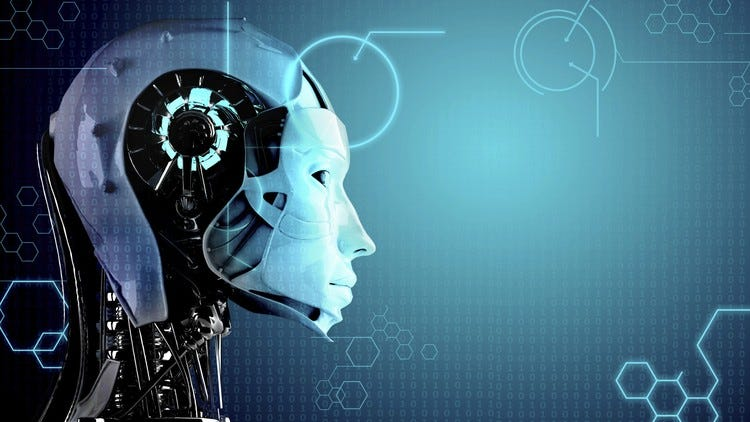
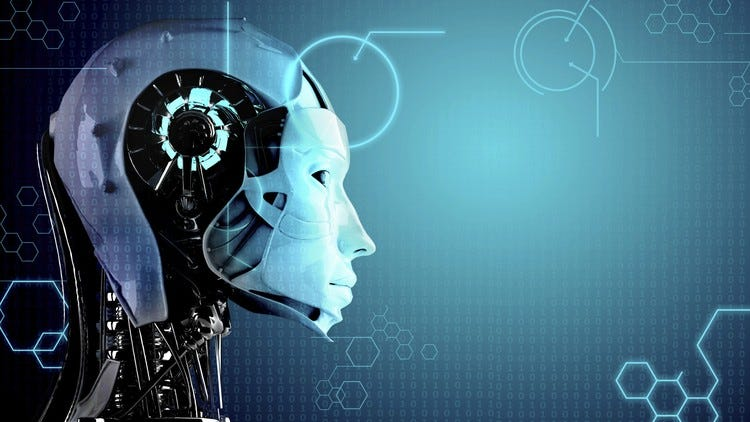

Early Concepts:
The concept of artificial intelligence dates back to classical philosophy, but modern AI began to take shape in the mid-20th century with pioneers like Alan Turing and John McCarthy.Applications of AI Technology
Healthcare
- Diagnostics:
AI algorithms analyze medical images to detect conditions such as tumors and fractures with high accuracy.- Personalized Medicine:
- AI helps tailor treatments based on individual patient data, improving outcomes and reducing adverse effects.
- Drug Discovery
- AI accelerates the drug discovery process by predicting how different compounds interact with biological targets.

Finance:
- Algorithmic Trading:
- AI-driven algorithms execute trades at high speeds, optimizing investment strategies and market efficiency.
- Fraud Detection:
- AI systems analyze transaction patterns to detect and prevent fraudulent activities.
- Customer Service:
- AI-powered chatbots provide instant support, handling routine queries and improving customer satisfaction.
 

The Future of AI and Technology
- General AI:
- The development of Artificial General Intelligence (AGI), which aims to achieve human-like cognitive abilities.
- AI and Sustainability:
- Using AI to address environmental challenges, such as optimizing energy consumption and monitoring climate change.
- Human-AI Collaboration:
- The integration of AI tools to augment human skills and creativity, fostering collaborative innovation.
Conclusion
AI and technology are reshaping the world, offering transformative benefits while posing significant challenges. As we advance, it is essential to navigate these changes with a focus on ethical considerations, equitable access, and thoughtful regulation. Embracing the potential of AI while addressing its challenges will determine how we harness its power for the greater good of society.